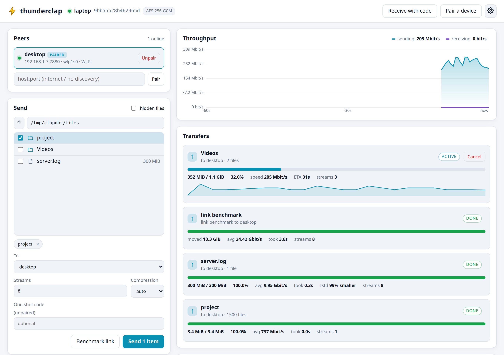
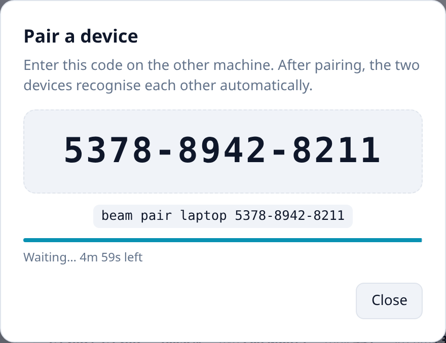
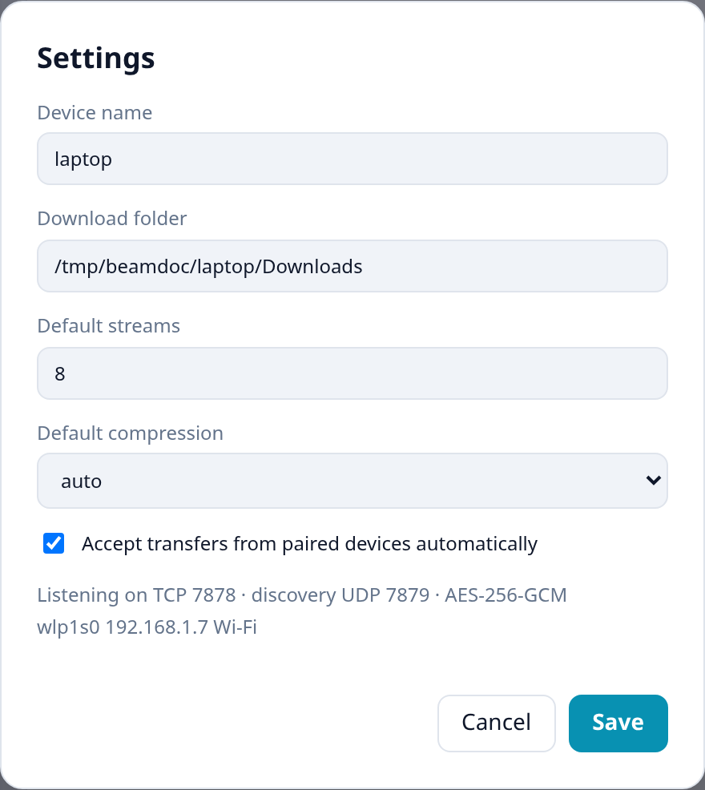
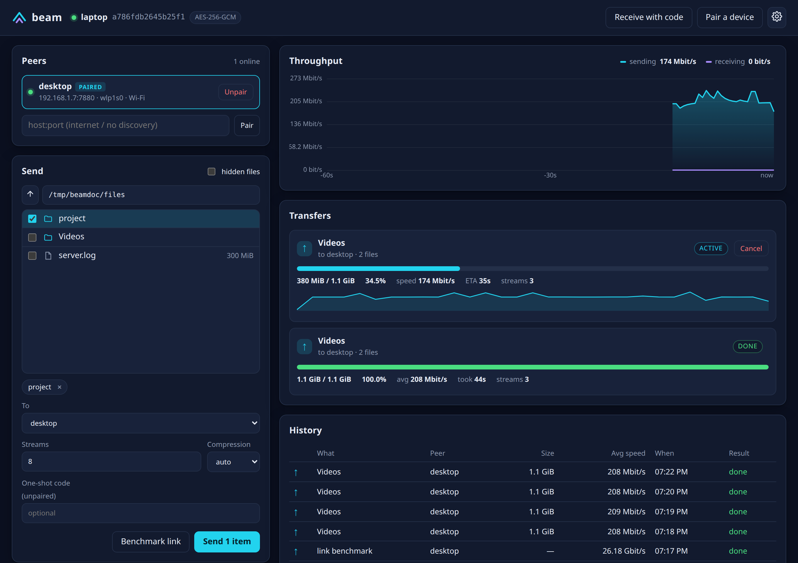
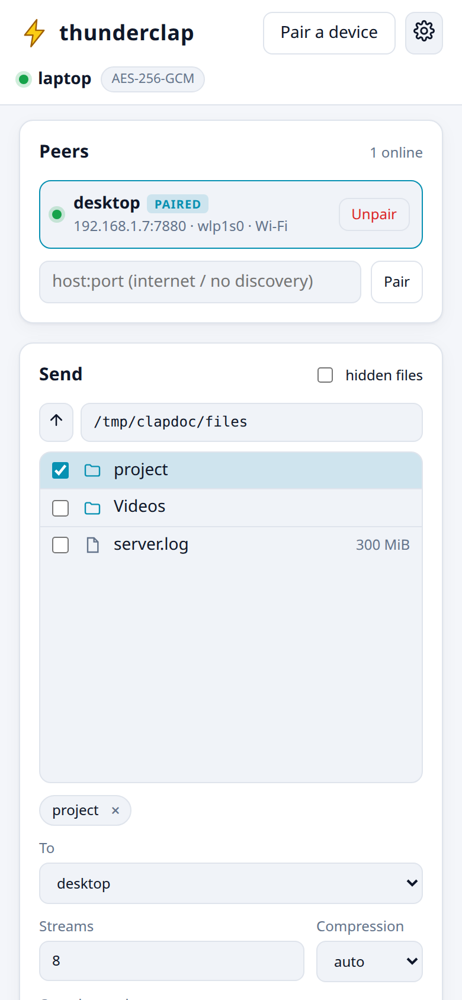

clap commandFast, encrypted file and folder transfer between Linux machines. Use it from the terminal when you want speed and simplicity, or from a live dashboard in your browser when you want to see what is happening.
thunderclap moves files and folders between two Linux computers as fast as the connection between them allows: a single 1 GB video, a photo library, or a source tree with a hundred thousand tiny files.
thunderclap is named after Thunder Breathing, First Form: Thunderclap and Flash from Demon Slayer — one move,
blindingly fast, performed in its user's sleep. The program is called thunderclap; the command you type is
the short clap.
Splits data into 4 MiB chunks and sends them over several TCP connections at once (8 by default). Small files are packed together so thousands of them don't cost thousands of round trips.
Everything is encrypted and authenticated. Machines prove who they are with keys exchanged once during pairing, so only your devices can send to you.
Text, logs and databases are compressed with zstd on the fly; videos, archives and ISOs are detected as incompressible and sent as-is at full speed.
If the network drops, a machine crashes or you press Ctrl-C, just run the same command again — only the missing pieces are sent.
thunderclap finds other thunderclap machines on your network automatically and shows which network interface and link speed each one is reachable on.
A terminal command for speed and scripts, and a browser dashboard with a file picker, live throughput graphs and history.
Each computer runs a small background program, the daemon. The daemons talk to each other over the
network. You talk to your daemon either with the clap command or through the web dashboard — both are
just remote controls for the same daemon. You never need to start the daemon by hand: any clap command starts it
if it isn't running.
a786fdb2645b25f1. Shown everywhere so you can tell devices apart.clap cancel 3.~/Downloads/thunderclap unless you change it.thunderclap is built from source. It takes about a minute and needs to be done on every machine you want to use.
# 1. Install the build tools and libraries (Debian / Ubuntu) $ sudo apt install build-essential pkg-config libsodium-dev libzstd-dev libxxhash-dev libcjson-dev # 2. Get the code and build it $ git clone https://github.com/hjani-2003/thunderclap.git $ cd thunderclap $ make # 3. Install into ~/.local/bin (no root needed) $ make install installed to /home/you/.local/bin/clap enable at login with: systemctl --user enable --now clap
Package names differ slightly: Fedora uses libsodium-devel libzstd-devel xxhash-devel cjson-devel;
Arch uses libsodium zstd xxhash cjson.
Make sure ~/.local/bin is on your PATH (it is by default on Ubuntu after you log in again). Check the install:
$ clap --version 0.1.0
Any clap command starts the daemon when needed, but a machine can only receive while its daemon is running.
On a computer that should always be ready to receive — a desktop or home server — let systemd start it when you log in:
$ systemctl --user enable --now clap # optional: keep it running even when you are logged out $ sudo loginctl enable-linger $USER
If a firewall is active (Ubuntu ships ufw), allow thunderclap's two ports on every machine that should receive or be discovered:
$ sudo ufw allow 7878/tcp # transfers $ sudo ufw allow 7879/udp # finding each other on the LAN
$ clap stop $ systemctl --user disable clap; rm ~/.config/systemd/user/clap.service $ rm ~/.local/bin/clap $ rm -rf ~/.config/thunderclap # removes keys, pairings and history
Two machines on the same network: a laptop that sends and a desktop that receives. thunderclap is installed on both (chapter 2).
The first command starts the daemon. After a couple of seconds the other machine appears under “On this network”.
$ clap peers Paired: (none — pair with `clap pair`) On this network: desktop cafb151299672aaa 192.168.1.7:7878 via wlp1s0 (Wi-Fi)
Nothing listed? Run any thunderclap command on the desktop too (e.g. clap status) so its daemon starts, and check the firewall (chapter 2).
$ clap pair Pairing code: 3704-9640-4439 On the other machine run: clap pair desktop 3704-9640-4439 (valid for 5 minutes, one attempt)
$ clap pair desktop 3704-9640-4439 ✓ paired with desktop (cafb151299672aaa)
The desktop's terminal confirms with ✓ paired with laptop. You never need to do this again for these two machines.
$ clap send ~/Videos/trip ~/project --to desktop [████████████████░░░░░░░░░░░░░░] 54.2% 610 MiB / 1.1 GiB 8.15 Gbit/s ETA 0:01 ✓ sent to desktop (1.1 GiB, 1502 files) in 1.1s — 8.20 Gbit/s avg
The files appear on the desktop in ~/Downloads/thunderclap/trip and ~/Downloads/thunderclap/project, with their permissions and modification times preserved.
$ clap uiYour browser opens on http://127.0.0.1:8080 with live graphs, a file picker and history (chapter 6).
Pairing works both ways. The desktop can now also run clap send … --to laptop.
thunderclap only accepts transfers from machines it knows. There are two ways to become known: pairing (permanent) and one-shot codes (single use).
Run clap pair on one machine to show a code, then clap pair <name> <code> on the other, as in the
quick start. Rules worth knowing:
clap pair again.<name> can be the device name shown by clap peers, a fingerprint prefix, or an address like 192.168.1.20 or myserver.example.com:7878.3704 9640 4439 and 370496404439 work too.To receive files from a friend's computer without pairing it permanently, ask for a one-shot code on the receiving side:
$ clap recv --code One-shot code: 0271-5949-4950 On the sending machine run: clap send <files> --to desktop --code 0271-5949-4950 Waiting for the transfer… (Ctrl-C to stop waiting) Receiving server.log from laptop ✓ received from laptop (300.0 MiB, 1 files) in 0.3s — 8.33 Gbit/s avg, compressed saved to ~/Downloads/thunderclap/server.log
$ clap send server.log --to desktop --code 0271-5949-4950 ✓ sent to desktop (300.0 MiB, 1 files) in 0.3s — 8.43 Gbit/s avg, compressed
The code is valid for 10 minutes, for one transfer, and leaves no permanent trust behind. In the dashboard, the same thing is the Receive with code button.
Automatic discovery only works on the local network, but pairing and transfers work anywhere:
clap pair home.example.com:7878 <code>
(you can pair on the LAN first, then travel — the pairing stays valid).clap send big.iso --to home.example.com:7878.
For paired devices, thunderclap also remembers the last address it reached them on.Over long distances, more parallel streams help: try --streams 16.
$ clap peers Paired: desktop cafb151299672aaa 192.168.1.7:7880 online On this network: desktop cafb151299672aaa 192.168.1.7:7880 via wlp1s0 (Wi-Fi) [paired] $ clap unpair desktop forgot desktop
Unpairing only changes the machine you run it on: the laptop now refuses transfers from the desktop and can no longer send
to it, but the desktop still lists the laptop until you run clap unpair laptop there too.
Everything thunderclap can do is available as a clap sub-command. This chapter covers daily use;
chapter 12 lists every option.
$ clap send <file or folder>... --to <peer> [options]
--to takes a device name, a fingerprint prefix, or host[:port].| Option | Meaning |
|---|---|
--streams N | Number of parallel connections (1–32). Default: the number of CPU cores, between 2 and 8. |
--compress MODE | auto (default) compresses only data that benefits; off never compresses; 1–19 forces that zstd level (higher = smaller but slower). |
--code CODE | Send to an unpaired machine using a one-shot code it gave you. |
--detach | Start the transfer in the background and return immediately. |
On a paired machine there is nothing to do: transfers are accepted automatically and saved into the download folder. Each top-level file or folder you send becomes an entry there:
~/Videos/trip creates ~/Downloads/thunderclap/trip/…trip (1) or notes (1).txt.name.clap-part; it gets its real name, permissions and timestamp once complete.If you'd rather approve each incoming transfer, turn off auto-accept on the receiving machine:
$ clap config auto_accept off $ clap ls id started peer what size speed state 1 10-25 19:17 ← laptop holiday 400.0 MiB 0.0% 0 kbit/s waiting $ clap accept 1 # or: clap reject 1 ✓ received from laptop (400.0 MiB, 1 files) in 1.4s — 8.99 Gbit/s avg saved to /home/you/Downloads/thunderclap/holiday
clap accept shows the progress bar until the transfer finishes. An unanswered request is declined after 10 minutes. The dashboard shows
Accept / Decline buttons for waiting transfers.
$ clap send ~/Videos --to desktop --detach transfer 5 started — follow it with `clap watch 5` $ clap ls id started peer what size speed state 5 10-25 19:07 → desktop Videos 1.1 GiB 5.8% 207.7 Mbit/s active 4 10-25 19:07 → desktop link benchmark 0 B 0.0% 24.20 Gbit/s done 3 10-25 19:07 → desktop server.log 300.0 MiB 100.0% 8.43 Gbit/s done $ clap watch 5 # live progress bar; Ctrl-C here cancels the transfer $ clap cancel 5 # stop it without watching $ clap history # the last 200 transfers, kept across restarts
Arrows show direction: → sent, ← received.
$ clap status thunderclap 0.1.0 — daemon running device laptop (a786fdb2645b25f1) peer port 7878 (TCP), discovery UDP 7879 web UI http://127.0.0.1:8080 (open with `clap ui`) downloads /home/you/Downloads/thunderclap auto-accept on from paired peers streams 8 compression auto cipher AES-256-GCM interface wlp1s0 192.168.1.7 Wi-Fi $ clap config name "work-laptop" $ clap config download_dir ~/Inbox $ clap config compress off $ clap stop # stop the daemon (it restarts on the next thunderclap command)
The dashboard does everything the terminal does, with a file picker and live visuals. It runs inside the daemon — there is no separate server to install.
Run clap ui. It opens your browser on http://127.0.0.1:8080 with a secret access token attached to
the address. The token keeps other websites you visit from controlling thunderclap, so open the dashboard with clap ui
rather than typing the address. If you see “Open thunderclap from your terminal”, that is why. The dashboard is only reachable
from the same computer.

1 2 3 4 5 6 7 8 9Below the transfers, History lists past transfers with size, average speed, time and result. Notifications pop up in the bottom-right corner when a transfer finishes or fails.

On the machine that shows the code, press Pair a device. On the other machine either run the
displayed clap pair … command or click Pair next to the device in the Peers list and type the code.
Receive with code works the same way for one-shot transfers: give the code to the sender, who enters it
in the One-shot code field (5) or uses --code.

~/.config/thunderclap/config.json; the same as clap config.The bottom of the dialog lists the ports and the network interfaces with their link speed.


A transfer can never be faster than the slowest of three things: the network link, the disks at either end, and the CPU doing encryption and compression. thunderclap is designed so the network or the disk is the limit.
clap bench sends encrypted data from memory to memory for a few seconds — no disks involved — and reports what
the connection plus encryption can do:
$ clap bench desktop --secs 10 27.5 GiB 27.99 Gbit/s 0:01 link to desktop: 26.18 Gbit/s (32.4 GiB in 10.6s over 8 streams)
This example ran with both daemons on one computer, so no real network was involved; between two machines the result is limited by the link (about 0.94 Gbit/s on gigabit Ethernet).
Compare the benchmark with a real transfer. If transfers are much slower than the benchmark, the disk (or many tiny files) is the bottleneck, not the network.
| Connection | Realistic ceiling | 1 GB takes about |
|---|---|---|
| Wi-Fi 5 / Wi-Fi 6 | 200 – 900 Mbit/s, varies a lot | 10 – 40 s |
| Gigabit Ethernet | ~940 Mbit/s | ~9 s |
| 2.5 GbE | ~2.35 Gbit/s | ~3.5 s |
| 10 GbE | ~9.4 Gbit/s (fast NVMe needed) | ~1 s |
| USB4 / Thunderbolt networking | 10 – 30 Gbit/s | under 1 s |
For reference, on a single laptop (loopback, RAM disk) thunderclap measured about 13 Gbit/s for a 1 GiB file,
12 Gbit/s for a 20 000-file folder, and 22–25 Gbit/s in clap bench, with AES-256-GCM encryption on.
clap peers shows which one.thunderbolt0 network interface. thunderclap uses it like any other network — this is the fastest option for laptops.| Situation | Try |
|---|---|
| Internet or long-distance link | --streams 16 (or up to 32) to keep more data in flight. |
| Slow link, compressible data (logs, text, databases, VM images) | --compress 3 to 9: smaller on the wire. auto already uses a fast level. |
| Very fast link, data known to be incompressible | --compress off saves a little CPU (auto mode already skips incompressible chunks after a quick test). |
| Old CPU without AES-NI | Nothing to do: thunderclap switches to ChaCha20-Poly1305 automatically, which is fast in software. |
| Hundreds of thousands of small files | Already handled: files under 1 MiB are bundled into 4 MiB chunks. The receiving disk's speed at creating files becomes the limit. |
Large transfers get interrupted: laptops sleep, Wi-Fi drops, someone presses Ctrl-C. thunderclap is built so that starting again costs only the part that didn't arrive.
To resume, run the same send again — same files, same destination device. thunderclap recognises it and transfers only the missing chunks:
$ clap send ~/Videos --to desktop [███░░░░░░░░░░░░░░░░░░░░░░░░░░░] 6.5% 73 MiB / 1.1 GiB 207.1 Mbit/s ETA 0:41 ^C cancelling… ✗ cancelled: cancelled — send again to resume $ clap send ~/Videos --to desktop ✓ sent to desktop (1.1 GiB, 2 files) in 0.8s — 11.38 Gbit/s avg, resumed
This works after any kind of interruption — a cancel on either side, a lost connection, or a crash or reboot of either machine. Good to know:
Videos (1)).*.clap-part files plus a small progress journal in
~/Downloads/thunderclap/.clap/. Deleting those simply means the next attempt starts from scratch; if you delete only some of the files, thunderclap notices and re-sends what is missing.Errors are reported on both sides in plain language, for example:
✗ failed: receiver: cannot write /home/you/Downloads/thunderclap/Videos/day1.mp4: No space left on device
Fix the cause (here: free some space) and run the same send again — it continues where it stopped.
This chapter explains what protects your data, for readers who want to know. You don't need it to use thunderclap.
On first start every machine creates a random key pair (X25519), stored in ~/.config/thunderclap/identity.key and readable
only by you. Its fingerprint is what you see next to the device name. Pairing exchanges these public keys; afterwards
each machine only accepts transfer sessions from keys in its paired list.
Pairing uses CPace, a password-authenticated key exchange (PAKE) over the ristretto255 group. Both machines turn the code into a mathematical starting point and exchange values derived from it. If both used the same code they arrive at the same secret key; if not, they don't — and the exchanged values reveal nothing that would let an eavesdropper test guesses later. An attacker gets exactly one online guess per code, and a failed guess burns the code.
Each transfer between paired machines starts with a handshake modelled on the Noise “KK” pattern: both sides combine their permanent keys with brand-new temporary keys. Only the two genuine devices can compute the result, and recorded traffic stays unreadable even if a device key is stolen later (forward secrecy). Each parallel data connection derives its own keys, salted with a random value from the receiver, so recorded connections can't be replayed.
All traffic after the handshake is encrypted and authenticated with AES-256-GCM (on CPUs with AES instructions) or ChaCha20-Poly1305, using libsodium. File names and folder structure are encrypted too — someone watching the network sees only that two machines are talking, and roughly how much data moves. Separately, on your local network each daemon announces its device name and fingerprint every two seconds so others can find it; choose a device name you don't mind neighbours on the same network seeing.
.., or would pass through a symbolic link created by the same transfer are rejected.The web server listens on 127.0.0.1 only. Every request must carry the token from
~/.config/thunderclap/web_token, and requests whose Host or Origin isn't the local dashboard are rejected —
this blocks malicious websites from using your browser to control thunderclap (CSRF and DNS rebinding). The terminal talks to the
daemon over a Unix socket that only your user can open.
Anyone who can log in as your user can use thunderclap as you, like any other program. Treat ~/.config/thunderclap as private,
and unpair devices you no longer own.
Change settings with clap config <key> <value>, in the dashboard's Settings dialog, or by editing
~/.config/thunderclap/config.json (restart the daemon afterwards with clap stop).
| Key | Default | Meaning |
|---|---|---|
name | host name | Device name shown to other machines. |
download_dir | ~/Downloads/thunderclap | Where received files are saved. |
auto_accept | on | Accept transfers from paired devices without asking. |
streams | CPU cores, 2–8 | Default number of parallel connections. |
compress | auto | auto, off, or a zstd level 1–19. |
peer_port | 7878 | TCP port for transfers (config file or clap daemon --port). |
web_port | 8080 | Dashboard port on 127.0.0.1 (config file or clap daemon --web; 0 disables it). |
| Path | Contents |
|---|---|
~/.config/thunderclap/config.json | The settings above. |
~/.config/thunderclap/identity.key | This device's private key. Deleting it gives the device a new identity — all pairings must then be redone. |
~/.config/thunderclap/peers.json | Paired devices: name, public key, last known address. |
~/.config/thunderclap/web_token | Access token for the dashboard. |
~/.config/thunderclap/history.json | The last 200 transfers. |
~/.config/thunderclap/daemon.log | Daemon log when it was started automatically (with systemd: journalctl --user -u clap). |
<download_dir>/.clap/ | Progress journals of unfinished incoming transfers. |
$XDG_RUNTIME_DIR/clap.sock | Socket the clap command uses to talk to the daemon. |
| Port | Used for | Needs to be open? |
|---|---|---|
7878/tcp | Pairing and transfers | Yes, on machines that receive (forward it on the router for internet use). |
7879/udp | Discovery beacons (broadcast and multicast group 239.255.77.78) | Yes, for automatic discovery on the LAN. |
8080/tcp | Dashboard, on 127.0.0.1 only | No — never reachable from the network. |
clap --home DIR … (or the environment variable CLAP_HOME=DIR) uses a different configuration folder — and
therefore a separate daemon, identity and pairing list. Give each instance its own ports:
$ clap --home ~/thunderclap-test daemon --port 7880 --web 8081 --name test-instance
This is how the automated tests run two "machines" on one computer.
| Message | What it means and what to do |
|---|---|
| nothing discovered yet — is thunderclap running on the other machine, and UDP 7879 open? | Start thunderclap on the other machine (clap status) and open UDP 7879. Some Wi-Fi networks (guest networks, “client isolation”) block discovery — use the address instead: --to 192.168.1.20. |
| X is not paired — run `clap pair` on it, or use a one-shot code | You found the device but haven't paired with it yet (chapter 4). |
| … does not know this device — pair first with `clap pair` | The other machine doesn't (or no longer) have you in its paired list — e.g. it was reinstalled or unpaired you. Run clap unpair on your side and pair again. |
| … has no active code — run `clap pair` there first | There is no code waiting on the other machine, it expired, or it was already used. Generate a new one. |
| wrong code (the code is now used up) | The code didn't match. Run clap pair (or recv --code) again for a fresh code. |
| cannot connect to HOST:7878 | The other daemon isn't running, the address is wrong, or a firewall blocks TCP 7878. |
| this transfer is already running | An identical transfer is still in progress. Wait for it, or cancel it first. |
| connection lost — run the same send again to resume | The network dropped or the other side stopped. Just repeat the command. |
| receiver: cannot write …: No space left on device | The receiving disk is full (or the folder isn't writable). Fix it, then resend to resume. |
| cannot listen on port 7878: Address already in use | Another program (or another thunderclap) uses the port. Choose another with clap daemon --port. |
| “Open thunderclap from your terminal” in the browser | The page was opened without the access token. Run clap ui. |
Into the receiver's download folder — ~/Downloads/thunderclap by default. The final line of clap recv/clap accept
prints the exact path, and the dashboard shows it on the transfer card.
Yes. Start as many sends as you like (use --detach or several terminals); every daemon sends and receives at the same time.
Yes — everything is encrypted and authenticated, and an open port 7878 only accepts paired devices (or an armed one-shot code). As with any exposed service, keep thunderclap updated.
The disk is usually the limit: spinning hard drives manage 100–250 MB/s, and creating very many tiny files is slow on any disk. Wi-Fi speed also varies from second to second — look at the throughput graph.
No. It copies what you send. Sending a folder again creates a new copy (name (1)) unless the previous transfer of
the same, unchanged files was unfinished — then it resumes.
Read ~/.config/thunderclap/daemon.log, or run it in the foreground with extra detail: clap stop then clap daemon -v.
Yes, unless you kept ~/.config/thunderclap. A fresh install creates a new identity; unpair the old entry on the other machines and pair again.
clap [--home DIR] <command> [options] — <peer> is a device name, a fingerprint prefix,
or host[:port].
| Command | Description |
|---|---|
send <paths>… --to <peer> | Send files and folders. Options: --streams N, --compress auto|off|1-19, --code CODE, --detach. Ctrl-C cancels (resumable). |
recv --code | Show a one-shot code (10 min, single use) and wait for the incoming transfer. |
pair | Show a pairing code (5 min, one attempt) and wait until the other machine uses it. |
pair <peer> <code> | Pair with the machine that shows the code. |
unpair <peer> | Forget a paired device. |
peers | Paired devices (online or not) and devices discovered on the network, with interface and link speed. |
ls / transfers | Current and recent transfers with their ids. |
history | The last 200 transfers, kept across restarts. |
watch <id> | Show the live progress bar of a transfer. Ctrl-C cancels it. |
accept <id> | Accept a waiting incoming transfer and follow it. |
reject <id> | Decline a waiting incoming transfer. |
cancel <id> | Stop a transfer (either direction). It can be resumed later. |
bench <peer> [--secs N] [--streams N] | Measure link + encryption throughput without disk I/O (default 10 s, max 120 s). |
ui | Open the dashboard in the browser (prints the address too). |
status / info | Device, ports, download folder, defaults, cipher and network interfaces. |
config <key> <value> | Change name, download_dir, auto_accept (on/off), streams or compress. |
daemon [options] | Run the daemon in the foreground: --port N, --web N, --dir DIR, --name NAME, -v for debug logs. Options given here are saved. |
stop | Stop the daemon. |
--version, --help | Print the version or the usage summary. |
0 on success, 1 when a transfer or command fails, 2 for usage errors — useful in scripts:
$ clap send /srv/backups/nightly.tar.zst --to nas && echo "backup copied"
| Path | Contents |
|---|---|
src/main.c | Command-line interface |
src/daemon.c, http.c, api.c | Daemon loop and Unix-socket API, HTTP/SSE server, commands shared by CLI and dashboard |
src/peer.c, crypt.c | Connection hellos, CPace pairing, KK handshake, encrypted channels |
src/sender.c, receiver.c | The transfer engine |
src/manifest.c, journal.c, compress.c | File lists and chunk layout, resume journal, adaptive zstd |
src/discovery.c, transfer.c, config.c | LAN beacons, transfer state and history, settings and peer store |
src/proto.h | Wire protocol definition |
web/ | Dashboard (plain HTML, CSS, JavaScript — no build step), embedded into the binary |
tools/bin2c.c | Build helper that turns the dashboard files into C arrays |
tests/ | Unit tests and the end-to-end script |
docs/ | This guide: source in docs/guide/, screenshots in docs/img/, tools in docs/tools/ |
$ make test == build/test_crypto ok == build/test_storage ok all unit tests passed $ make e2e == pairing ✓ wrong pairing code rejected ✓ paired alpha ↔ bravo == transfers ✓ 300 MiB file ✓ folder: 3000 small files, modes, mtimes, symlink, empty file/dir ✓ name clash saved as 'big (1).bin' ✓ unpaired device refused ✓ one-shot code transfer from an unpaired device == resume ✓ killed sender mid-transfer, resumed without resending finished chunks == web ✓ web API requires the token and a loopback Host == bench ✓ link benchmark all 10 end-to-end checks passed
The guide is an HTML page printed to PDF by headless Chrome (Node.js 22+ and Google Chrome or Chromium required):
$ make docs # → docs/thunderclap-user-guide.pdf # refresh the dashboard screenshots (needs a running daemon, ideally mid-transfer): $ node docs/tools/screenshots.mjs "$(clap ui | head -1)" docs/img ~/some/folder